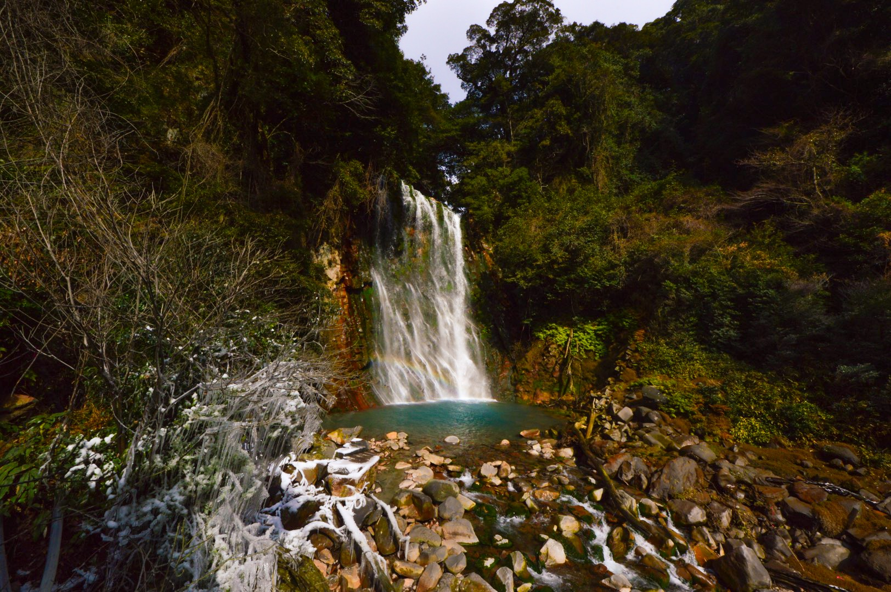
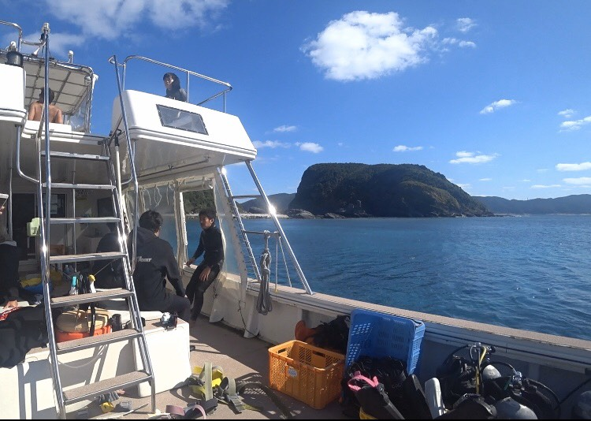
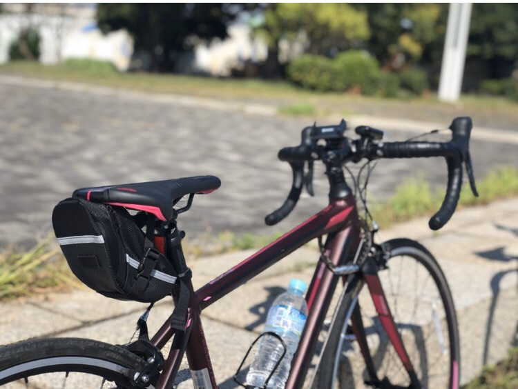
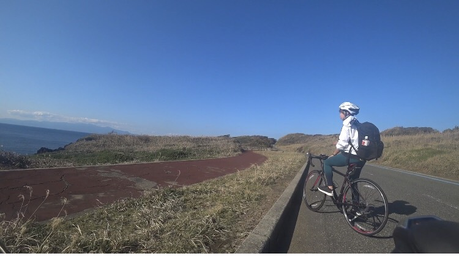
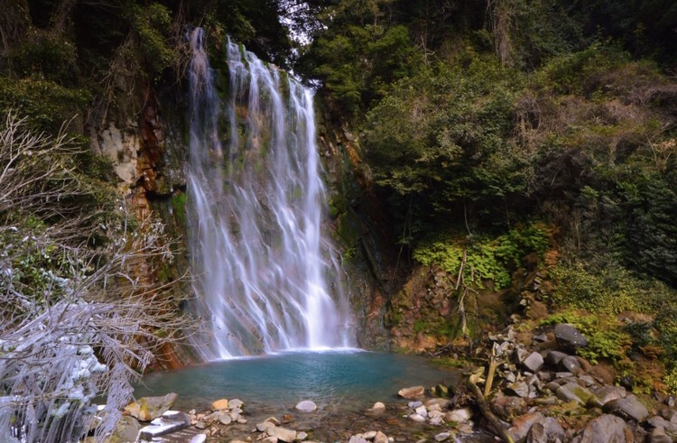
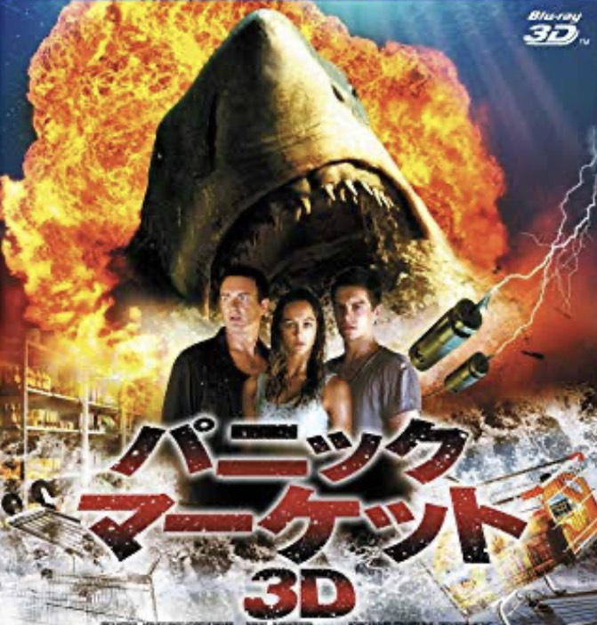
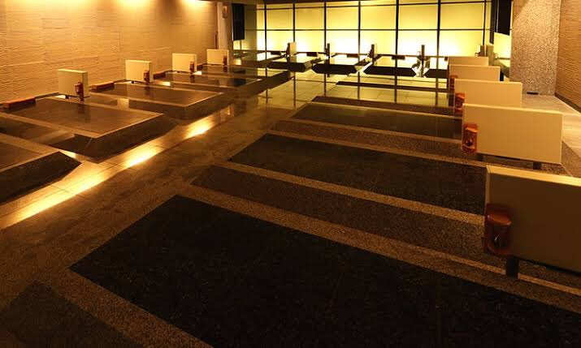

キーワードはリフレッシュ！マイ趣味厳選5選

休日や時間があるとき、何に時間を使いますか？
趣味や好きなことになにか共通点がありますと、嬉しいです！
好きなことを5つ紹介させていただきます。
目次
- ダイビング
- ロードバイク
- 滝鑑賞
- amazonプライム
- 岩盤浴
1.ダイビング
海の中は非日常が味わえて、リフレッシュになっています。
主に潜っているポイントは、慶良間諸島・伊豆諸島・東伊豆です。
ジンベイザメと一緒に泳ぐことが目標です。
主に潜っているポイントは、慶良間諸島・伊豆諸島・東伊豆です。
ジンベイザメと一緒に泳ぐことが目標です。
昨年の12月、沖縄の慶良間諸島に潜りに行きました。
ウミガメと遭遇！
ウミガメと遭遇！
2.ロードバイク
2年前に友人の影響でロードバイクを購入しました。
ロードバイクで道を全速力で駆け抜けていくのが、気持ちいいです。
今の目標は、しまなみ街道を横断することです。

ロードバイクで道を全速力で駆け抜けていくのが、気持ちいいです。
今の目標は、しまなみ街道を横断することです。
昨年の11月、自転車で”大島”を一周しました。
左手に海、右手に山と、大自然に囲まれながらのサイクリングは、最高でした。
左手に海、右手に山と、大自然に囲まれながらのサイクリングは、最高でした。
3.滝
自然に囲まれると自ずとリフレッシュになります。
静かに流れる滝も好きですが、どちらかと言うと私は激しい滝のほうが好きです。
一生に一度、滝行はやってみたいと思っています。
静かに流れる滝も好きですが、どちらかと言うと私は激しい滝のほうが好きです。
一生に一度、滝行はやってみたいと思っています。
最近言った滝。＠乙女滝
4.amazonプライム
父が見ていたバチェラージャパンをきっかけに、
時間があればamazonプライムをチェックしています。
おすすめの映画ありましたら、教えていただきたいです！

時間があればamazonプライムをチェックしています。
おすすめの映画ありましたら、教えていただきたいです！
今はB級のサメ映画にはまっています。
5.岩盤浴
なかなか疲れが取れないときは、岩盤浴でリフレッシュしています。

おすすめの施設は両国にある”江戸遊”です。
2種の岩盤浴と6種類のお風呂、サウナ、露天風呂、食事もそろった温浴施設です。
朝11時～営業しており、一日いても2,400円です。
他のスパとは違い、土日でも混雑していないので、穴場です。
2種の岩盤浴と6種類のお風呂、サウナ、露天風呂、食事もそろった温浴施設です。
朝11時～営業しており、一日いても2,400円です。
他のスパとは違い、土日でも混雑していないので、穴場です。